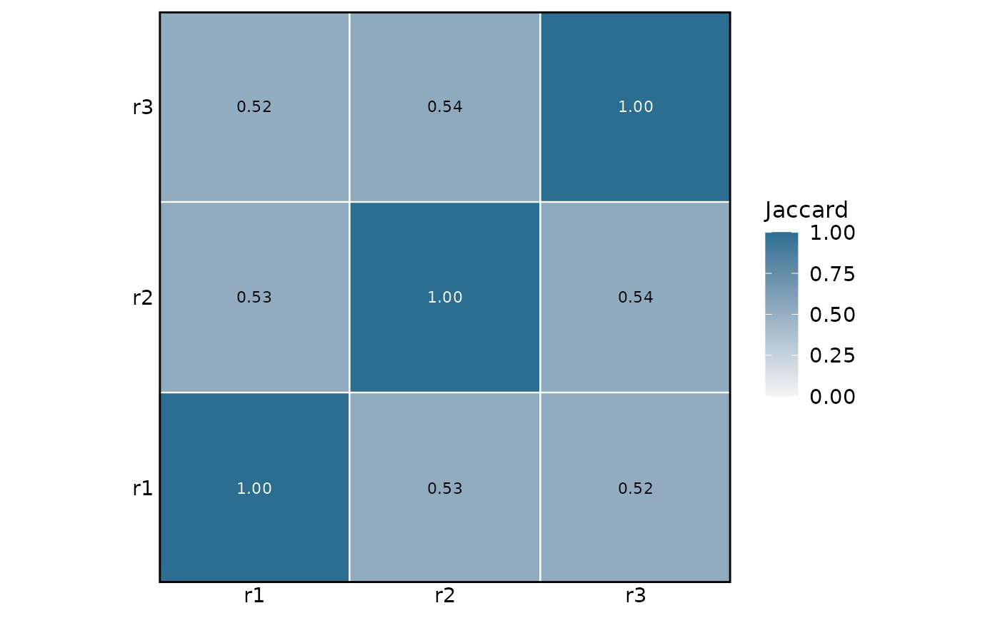

Jaccard index over the peaks entering the analysis. A replicate that agrees poorly with all the others is a candidate for down-weighting; two blocks of mutually agreeing replicates usually mean a batch effect rather than a quality problem.
Usage
plotJaccard(
object,
showValues = TRUE,
lowColour = "#F5F5F5",
highColour = "#2C6E91",
baseSize = 12
)Arguments
- object
A [ConsensusRegions-class] object.
- showValues
Print the index inside each tile. The lettering switches between black and white so that it stays legible whatever the tile is filled with. Default:
TRUE.- lowColour
Colour for a Jaccard index of zero. Default:
"#F5F5F5".- highColour
Colour for a Jaccard index of one. Default:
"#2C6E91".- baseSize
Base font size in points. Default:
12.
Examples
peakFiles <- system.file("extdata",
c("rep1.narrowPeak", "rep2.narrowPeak",
"rep3.narrowPeak"),
package = "consensusRegions")
peaks <- readPeakSets(peakFiles, sampleNames = c("r1", "r2", "r3"),
verbose = FALSE)
plotJaccard(buildConsensus(peaks, verbose = FALSE))
